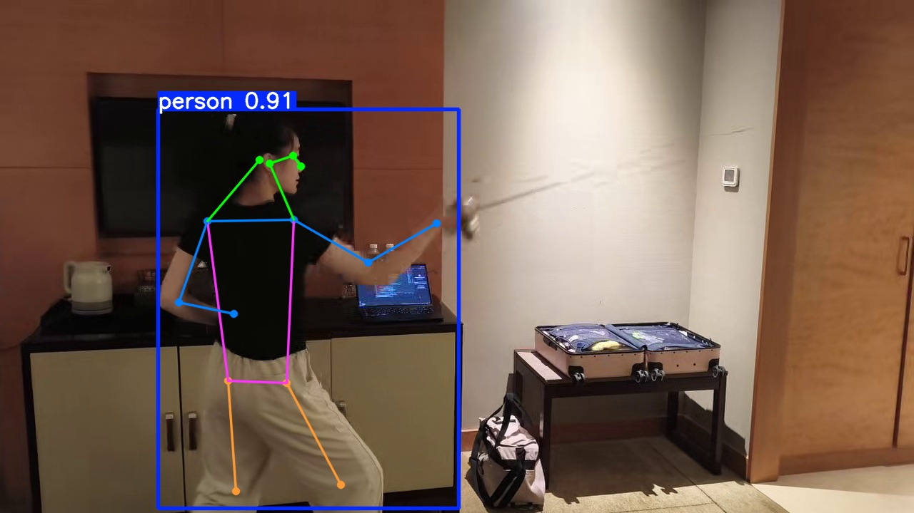
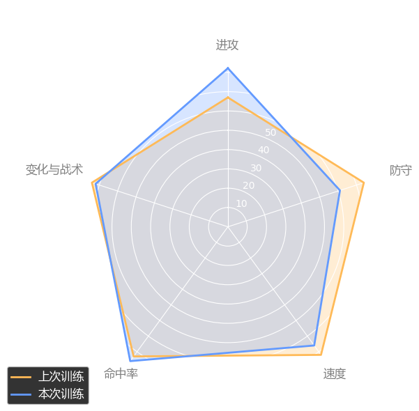
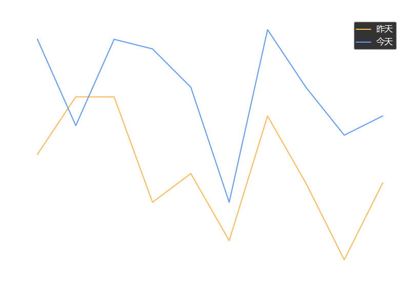

击剑训练分析报告
训练日期: 2026-01-03
关键时刻分析

时间点: 00:00 待改进
分析项: 动作: 直刺
说明: 本次分析中的一个待改进时刻，评分为 7.5。

时间点: 00:07 亮点时刻
分析项: 动作: 直刺
说明: 本次分析中的一个亮点时刻，评分为 9.5。
数据统计

AI综合评语
本次训练基于YOLOv8真实数据分析完成。
时间点: 00:00 待改进
分析项: 动作: 直刺
说明: 本次分析中的一个待改进时刻，评分为 7.5。
时间点: 00:07 亮点时刻
分析项: 动作: 直刺
说明: 本次分析中的一个亮点时刻，评分为 9.5。